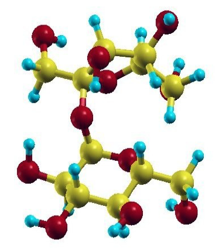
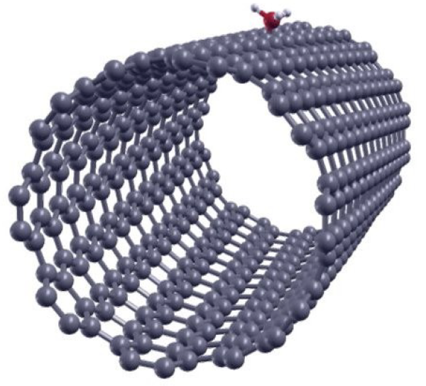

Tutorial 4: Geometry optimization¶
Version: all versions Simon M.-M. Dubois;
Introduction¶
This tutorial aims at showing how to run a simple geometry optimization with ONETEP.
Geometry optimization is one of the primary tasks in quantum simulation. The essence of the calculation is for the constituting atoms to be moved to the positions where the total energy is minimal. In general, this can be tackled efficiently if the forces on the atoms can be computed. Over the past twenty years, various schemes have been derived to solve this problem in the framework of ab initio calculations. These range from simple approaches based on molecular dynamics, such as the steepest descent and damped dynamics methods, to the more sophisticated conjugated gradient and Quasi-Newton methods.
The geometry optimization scheme implemented in ONETEP relies on the isolation of the atomic and electronic subsystems (i.e. the Born-Oppenheimer approximation). For a given configuration of the ionic positions, the electronic degrees of freedom are completely relaxed so that the electronic subsystem stays on the Born-Oppenheimer surface. All the possible configurations of the ionic positions therefore define a multi-dimensional potential energy surface for which we want to find the global minimum. The atomic forces are calculated by application of the Hellmann-Feynman theorem and the ionic positions are moved around by means of the Broyden-Fletcher-Goldfarb-Shanno (BFGS) method in order to find the minimum of the potential energy. At this point, one has to keep in mind that several local minima may be present in the configuration space and the algorithm can get trapped in one of those. Therefore, despite the sophistication of the minimization method, the location of a global minimum still requires the intuition of a good starting point.
The calculation flow of a geometry optimization in ONETEP is a three step process:
-
Given an ionic configuration, the electronic degrees of freedom are relaxed (cfr. self-consistent optimization of the density kernel and NGWFs).
-
The total energy and atomic forces are computed and compared with those of previous ionic configurations. The threshold chosen as stopping criterion for the geometry optimization is tested.
-
The atomic position are updated by means of the BFGS algorithm.
The Ethene Molecule¶
As a first example, we will deal with the geometry optimization run a geometry optimization of the ethene molecule. The following is a rough guide through the input file.
First, we need to set
1 | |
For the SCF part, try running a calculation with an energy cutoff of about 650 eV, NGWF radii of about 6.0 Bohr and a cubic simulation cell of side-length 40 Bohr:
1 2 3 4 5 6 7 8 9 10 11 12 13 14 15 16 17 18 19 20 21 22 23 24 | |
You will also need the pseudopotential block:
1 2 3 4 | |
A full example input/output file can be downloaded here
Now you are ready to run ONTEP:
1 | |
The calculation should take ~15 min on 2 MPI processes (on a
Intel Xeon Silver 4114 cpu). In the meantime you may want to
repeat the procedure with varying parameters in order to converge the
calculation with respect to the cutoff energy, the NGWF radii, as well as the
size of the simulation cell. Besides, if you aim to compute a properties
(e.g. the C-C bond length) with a given computational accuracy (e.g. 0.005 Ang),
you should also check that the geom_max_iter and ngwf_treshold_orig
parameters do not prevent to reach the desired accuracy.
The output of ONETEP consists principally of two files: ethene.out
(the main output file) and ethene.geom.
This latter contains one block of information for each
iteration of the geometry optimization. Each block looks like:
1 2 3 4 5 6 7 8 9 10 11 12 13 14 15 16 17 | |
- The first line is the iteration number.
- The second line is the total energy.
- The next three lines are the lattice vectors expressed in Caresian coordinates.
- The next N lines (where N is the number of atoms) give the atomic coordinates.
- The following N lines give the atomic forces.
The main informations regarding the geometry optimization are gathered in the
ethene.geom file, however you may want to visualize the results in a
glimpse. You can use the perl script geom2xyz.x to generate a .xyz
file containing the atomic coordinates at each iteration of the geometry
optimization:
1 2 | |
This should produce a file ethene.xyz that you can visualize with your
favourite package (e.g. XCrysDEN).
Though the film of the relaxation provides you with crucial information such as
the appearance of dissociation, symmetry breaking, etc.
It is a good practice to keep track of the energy and forces at each iteration
in order to assess the relaxation process. The -- E tag which labels the
total energies in the ethene.geom file may be used for that purpose.
Create a new file ethene_energy.dat and plot the evolution of the
total energy using:
1 2 | |
You should notice that the total energy of the system decreases monotonically. Similarly, you can keep track of the maximum rms force on the ions at each iteration by running:
1 | |
This should produce you something like:
1 2 3 4 5 | |
The second column is the calculated value of the maximum rms force on the atoms, the third column is the force threshold that the code is trying to achieve, the fourth column provides the units, and the fifth column informs you as to whether convergence of the force has been achieved or not. You may visualize this information using gnuplot:
1 2 | |
You are now familiar with the geometry optimization scheme in ONETEP.
You might examine in more details the input variables that allow to control the
process. The keywords associated with the geometry optimization all start with
the geom_ prefix.
Their description is found on the ONETEP Documentation.
In particular, take a few minutes to have a look at the variables:
1 2 3 4 5 | |
Though their default values may appear to be convenient in most circumstances,
these latter are the very basic input variables to master before launching a
geometry optimization. Here, it is important to note that the three tolerance
criteria (geom_disp_tol, geom_energy_tol, and geom_force_tol) are not exclusive.
The three criteria have to be satisfied in order for the optimization to stop.
You might have noticed that during the relaxation of ethene molecule, the
default threshold imposed on the atomic forces
(geom_force_tol : 0.02 Ha/Bohr) has been reached before the one
associated with the convergence of the energy
(geom_energy_tol : 10e-06 Ha/Atom).
Like all the quasi-Newton schemes, the BFGS algorithm accumulates information
about the Hessian matrix.
As the the number of iteration increases, BFGS improves its knowledge of
the the potential energy surface around the minimum and the matrix used
to build the quadratic model of the potential energy surface converges
towards the true Hessian matrix corresponding to the local minimum.
However, the Hessian matrix is poorly approximated during the first few
relaxation steps.
It is therefore important to properly initialize the BFGS scheme.
This may be conveniently done by means of a unique parameter
geom_frequency_est.
For the best efficiency, its value should corresponds to a rough estimation of
the average of the optical phonon frequencies at the center of
the Brillouin zone.
In the case of the ethene molecule, the average of the experimentally reported
vibration frequencies is 0.0081 Hartree.
This value is very close to the default setting of geom_frequency_est
and we do not expect any speed-up of the relaxation process by adjusting it.
In various circumstances, it may appears convenient to impose some constraints to the atomic positions during the geometry optimization. Note that in the case of molecular systems it is often a good idea to keep an atom or an axis fixed during the optimization process in order to avoid losing computational time due to the rotations and/or translations of the system. Therefore it is worth having a quick look at the meaning of the variables:
1 2 | |
Finally, it is worth noting that, when running a geometry optimization, ONETEP
produces a .continuation file.
This latter contains all the information regarding the optimization
process and can be very helpful to restart an optimization from a previous run.
In such a case, the only thing you will need is to turn on the flag
geom_continuation.
In the same line of thought, a appropriate use of the keywords that control the
reading/writting actions of the code, may help you to save some precious
computational time:
1 2 3 | |
For example, to use write_converged_dkngwfs : T is a good practice when running a molecular
optimization as it avoid you to lose time in writing the density kernels and NGWFs on the disk.
The Sucrose Molecule¶
At this point, you should be familiar with most of the keywords needed to run a
proper geometry optimization.
Therefore, we suggest you to leave the ethene molecule and to try to optimize a
larger organic molecule.
You can find an example input file for the sucrose molecule
here.
You should edit and read it carefully.
You see that the write_converged_dkngwfs flag has been activated.
In addition, the values of
ngwf_cg_max_step and lnv_cg_max_step have been increased in
order to allow unconstrained line search during the conjugate gradient
optimization of the density kernel and NGWFs respectively.
The calculation should take a bit more than an hour (with 16 MPI processes on a Intel Xeon Silver 4114 CPU). Keeping trace of the atomic forces, you should notice a rapid decrease of the maximum rms force on the ions during the first relaxation steps. However, the hydrogen atoms tend to wiggle quite a lot and it takes a some time for the positions to settle down according to relaxation criteria.
1 2 3 4 5 6 7 8 9 10 11 | |

Periodic Crystals¶
Here above, the geometry optimization scheme has been illustrated by means of two molecular systems. Obviously, the same scheme holds for periodic crystals. As an example, we will investigate the adsorption of ammonia on a (10,8) carbon nanotube.
The carbon nanotube considered here contains 488 carbon atoms in its unit-cell and its chiral periodicity is of 62.87 Bohr.

Following the prescriptions stated above, you should be able to write an input
file for the nanotube (an example is given in
here.).
Note that for large systems, the spatial expansion of the density kernel has to
be truncated in order to achieve the linear scaling.
This can be done with the kernel_cutoff variable.
Obviously, stringent truncation of the density kernel is expected to affect the
accuracy of the calculation.
Therefore, the cutoff length has to be carefully adjusted.
You should already notice a significant decrease of the forces after the first
few iterations.